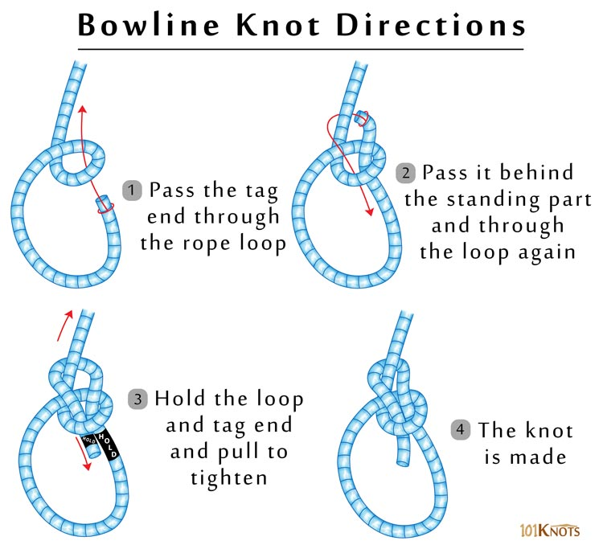

Bowline Knot
The bowline creates a loop at the end of a rope that cannot shrink or expand. This knot is often taught and illustrated with a poem of a rabbit coming out of the hole, hopping in front of a tree, going behind the tree, and back down his original hole.
How to tie a bowline:
Form a loop on top of the long end of the line. Pass the working end of the line up through the loop and around behind the line. Then pass the working end down through the original loop, all while maintaining the shape of the second loop you create, which becomes your bowline loop. Once the “rabbit” is back down its hole, pull the “tree” up to tighten the bowline.
